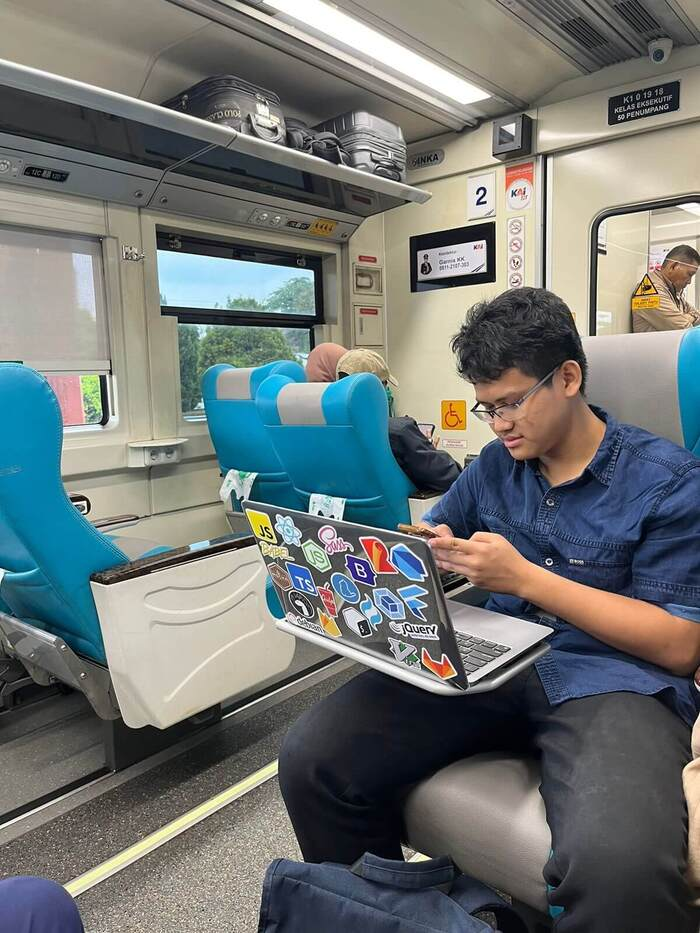

Being a nomad isn't easy, but it's what life has given me. I spent most of my childhood in Balikpapan, Borneo island. It was a lively place with beautiful forests and beaches 🏖️. Now, I live in South Tangerang, on the western side of the island of Java. Life here is more urban and fast-paced. Moving around has been challenging, but each place has given me unique memories and experiences.
My full name is Muhammad Alkahfi Khuzaimy Abdullah bin Abdullah Lahji. bin Abdullah refers to Son of
Abdullah and Lahji is Arabian family name.
Programmer

Sticker inspired by Kent C. Dodds
I really enjoy playing with laptop; this simple reason led me to believe that computer science is the only suitable study for me. During my studies, I gained a lot of programming fundamentals (yeah, that's what this study is about), but not so much in-depth technical knowledge in my case. Programming is like an ocean; you never know where its end is. Yesterday, I learned about data structures using the C++ language, and then I had an exam where I had to create a desktop application using Java. Honestly, I don't understand their relationship with each other.